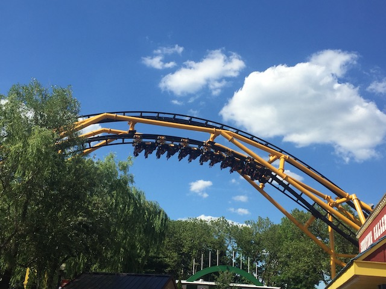
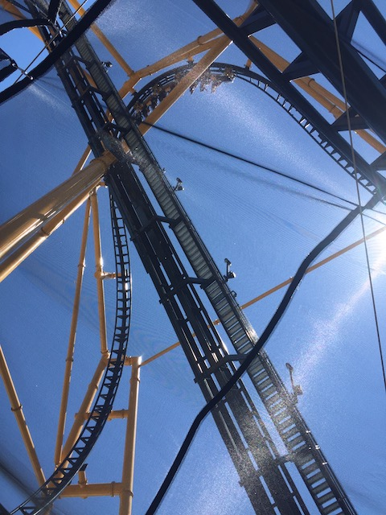
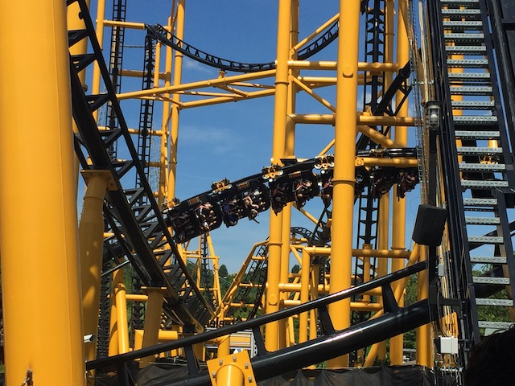
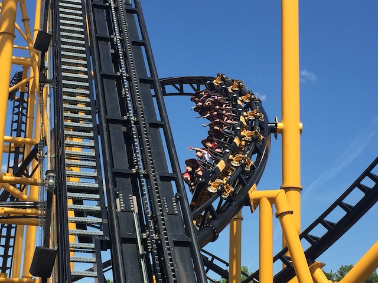
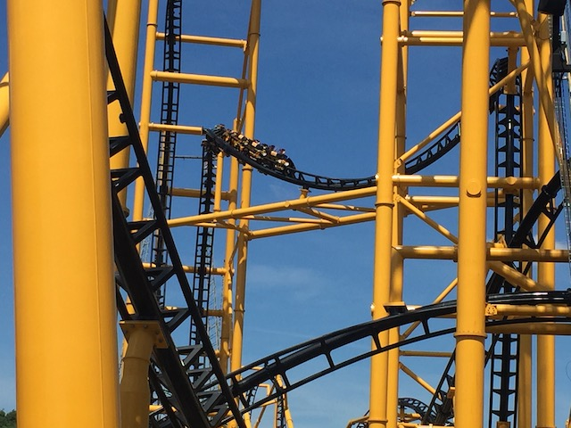
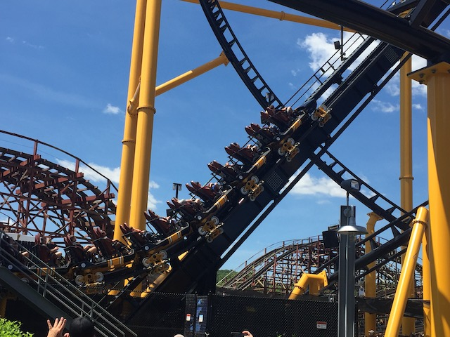

| |
Steel Curtain Review

Today, we'll be reviewing Steel Curtain at Kennywood. This is the parks major looping coaster. And....it's certainly a sight to behold. A big giant twisted mess of track. This thing literally looks like the doodling of a bored high schooler. I wouldn't be surprised if I accidentally drew Steel Curtain at some point in school, just drawing some random twisted roller coaster. Well, yeah. This thing is a beast to behold. Sadly, it's not nearly as crazy as it looks. Despite all the inversions, and the wide range of so many unique inversions. Yeah. This ride has a TON of unique elements on it. I know it's also known as the football coaster since....the theme of this ride is football. Specifically, the Pittsburgh Steelers since......Kennywood is in Pittsburgh. And other people give a f*ck about football. Also, apparently the Steel Curtain was a defense tactic the team used to win football games (Pretty sure all the football fans are rolling their eyes at me and my inability to understand the game). All right. Enough beating around the bush. Get in the seats, pull down the lap bar (So glad that this ride doesn't have OTSRs due to the fact that it's a looping machine). We begin to climb the lifthill. We get a GREAT view. Not of the park or anything like that. No, we get a great view of Steel Curtain. Specifically of the rides MONSTEROUS Banana Roll, which....it only looks even more intimidating and f*cked up while climbing it. Oh, and another thing to note. This thing is over 200 ft. This thing is technically a hyper coaster. Hell, if you exclude the ravine of Phantom's Revenge, this is the tallest ride in the park. And even then. The "drop" is only *slightly* smaller than the famous second drop on Phantom's Revenge. OK. We reach the top, and....get a nice quick view of trees, Phantom's Revenge, and of the Monongahela River. And then....it begins. And....we start out with not only our first drop, but an inversion as well. Nope. This isn't a flip-over drop like on B&M Wing Riders or a Barrel Drop that certain RMCs have. No, this is an inversion that was inspired by the bizarre wrap-around corkscrew from the infamous Drachen Fire from Busch Gardens Williamsburg (I'm torn on whether to be bummed about missing this since it looked like a really intersting and unique ride, or relieved about missing this since it also looked rough as hell). OK. In practice, it pretty much is just like the Dive Drops found on B&M Wing Riders. But....it has a little bit of laterals in it since....it doesn't just dive straight down. But regardless, I'm a big fan of these kinds of drops. An inversion into a drop, giving us all that speed is always fun. Go through a slight turn, and head right into the Banana Roll. Now this is an element that's still pretty rare, but seems to be gaining in popularity. However, unlike on Takabisha, this one.....felt more like a cobra roll. This one didn't feel quite as squished as the Banana Roll on Takabisha and it's New Jersey clone, TMNT Shellraiser. Unfortunately, this one also seems...tamer. The wider aspect gives it less whip. It's still a lot of fun. Especially due to its MASSIVE size. And....yeah. Coming out of this, really pours on the speed. This is a FAST ride. We then head around a slight turn and up into a tiny hill. Unfortunately, there is no airtime here. At all. BOO!!! LAME!!! This is not exactly a variety ride. Airtime is not Steel Curtain's thing. But hey. Moving on. We then head into another inversion. Hey. We've been talking about cobra rolls. How about we give some love to its far less popular cousin? The Sea Serpent roll. Yeah. Not very many rides have this inversion. But....it's a lot of fun. Personally, it's a little disorienting here. Partially due to....just being accustemed to cobra rolls. And also, all the twisted track around gives some nice chopper effects. We then gain more speed heading out of that and go into an airtime hill. Now this is the ONE part of the ride that has ANY airtime. And....it's very mild floater air. Approximately on par with the bunny hop at the end of Millenium Force. Savor this, cause this is all you're getting out of this ride. Or, you can conversely just go over and ride Phantom's Revenge and Jackrabbit and get your airtime fix on those two rides. We then head into a Dive Loop. And...yeah. It's basically just a standard Dive Loop. For as crazy and unique as this ride looks, it feels pretty much like a standard B&M. We then head into a Zero G Stall. No, not a Zero G Roll. A Zero G Stall. Which is basically the same thing. Only, you come out in the opposite direction you came in from. So you get some laterals here. And....there's a nice snap to this element. On top of that, it's located directly under the airtime hill. So there's some trippiness regarding that as well. You then head into another airtime hill. Only, there's no airtime. Yeah. This is something that is dissapointing about Steel Curtain. But hey. We then get to go through a corkscrew. And this one has some nice whip to it. A good little snap. Something to remind you that....you're going really fast. And this technically is a hyper coaster (even if it doesn't feel like one lol). Go around an aggressive little turn, and head right into a cutback. These things are offically no longer an obscure inversion. But hey. This one is pretty snappy and actually feels like two corkscrew halves, as opposed to so many cutbacks that just feel like extremely overbanked turns. So that's really good. Unfortunately, you then just head up a small little hill and glide right into the brake run. Aww. It's over. So yeah. That's Steel Curtain. It's not NEARLY as crazy as it lets on with all that twisted mess of track. But it's still a really fun ride. Particuarly towards the end, when the inversions become a little less floaty and a little more snappy. Is this an amazing coaster? No. It's not the best ride ever. It's not even the best ride at Kennywood (Phantom's Revenge is still king of the park). But it's still a solid coaster that is just a ton of fun. I definately recommend giving this a ride if you find yourself at Kennywood.
8/10
Location: Kennywood
Opened: 2019
Built by: S&S Power
Last Ridden: June 24, 2021
Steel Curtain Photos









Home
|